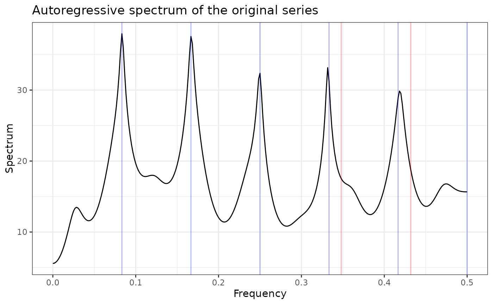
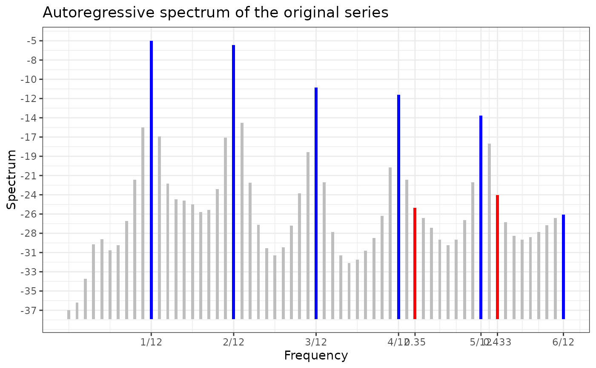
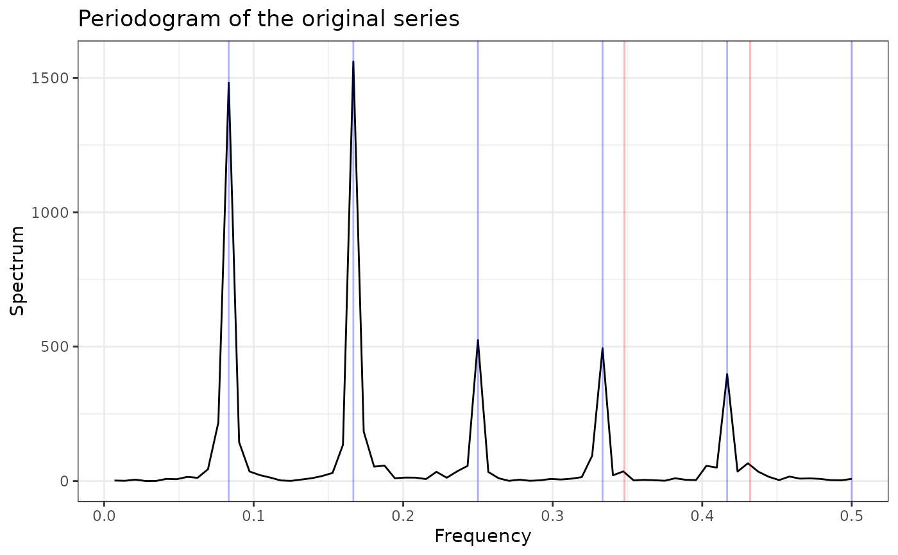
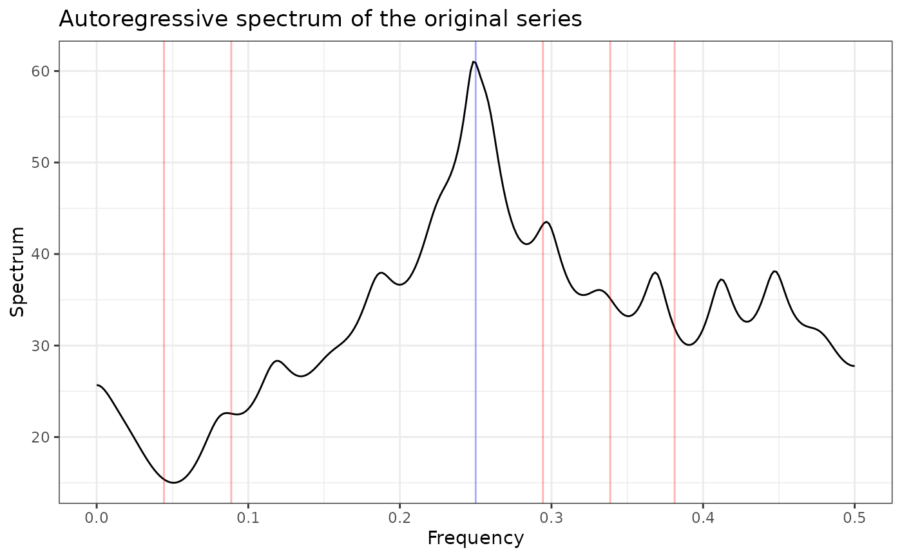
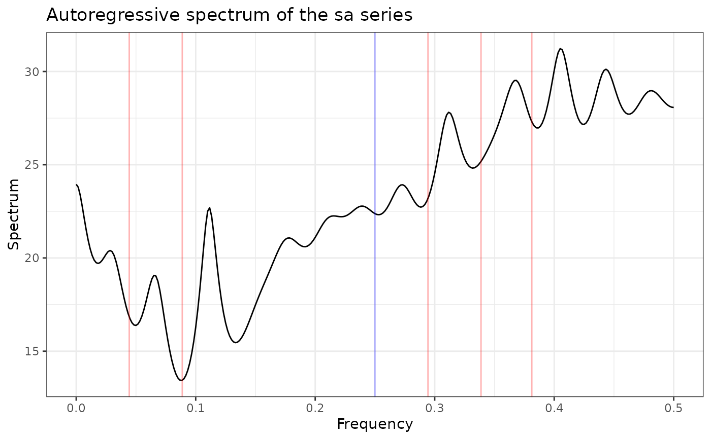
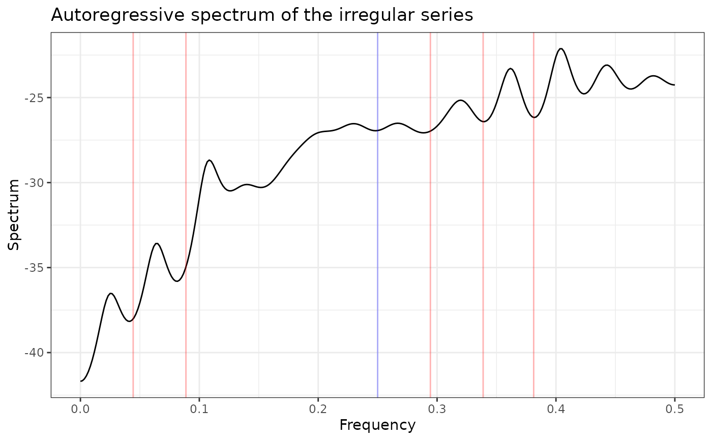
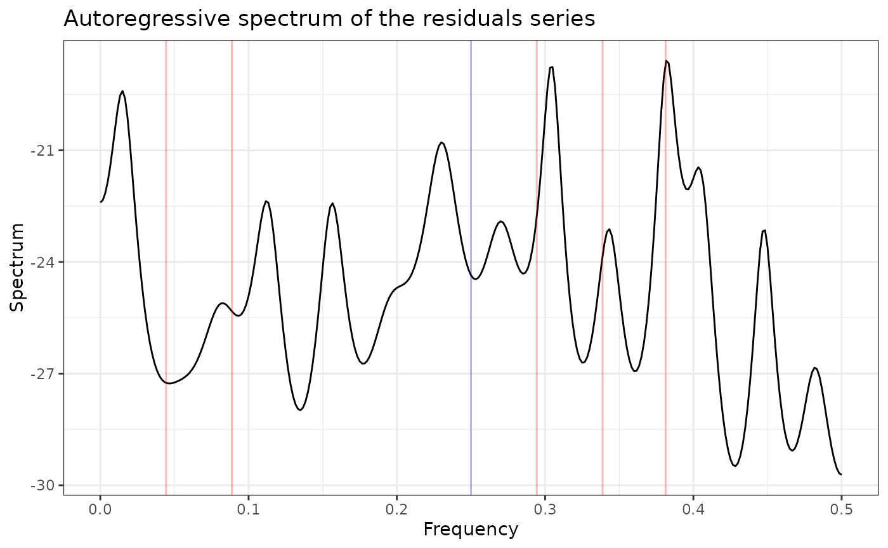

Create spectral plots using ggplot2, suitable for publications and reports with easy export to PDF, PNG, and other formats. Supports optional plotly conversion for basic interactivity. For advanced interactive features, see plotSpectrum.
Arguments
- x
an object of class persephone.
- tsType
character (
"original","sa","irregular","residuals") selecting the preferred type of time series to plot. A numeric value (1:4) corresponding to one of these characters is also accepted.- plotType
character (
"arSpec","arSpecBars","periodogram") selecting the preferred type of plot, see Details. A numeric value (1:3) corresponding to one of these characters is also accepted.- maxobs
maximum number of observations of the time series. If NULL,
maxobsequals the length of the time series for plotTypes"arSpec"and"periodogram"andmaxobs=96for plotType"arSpecBars".- n.freq
the number of frequencies, i.e. the number of points at which to plot. If NULL,
n.freq=301for plotTypes"arSpec"and"periodogram"andn.freq=61for plotType"arSpecBars".- order
order of the AR model
- main
plot title
- interactive
If TRUE, wrap the
ggplotobject in plotly::ggplotly to add basic interactivity (zoom, pan, hover tooltips). If FALSE (default), returns a static ggplot object suitable for export.- ...
other plotting parameters to affect the plot. Not currently used.
Value
Returns an object of class ggplot or plotly. The seasonal and
trading day frequencies are indicated in blue and red. For monthly data,
the seasonal frequencies are 1/12, 2/12, ..., 6/12 and the trading day
frequencies are 0.348 and 0.432. For quarterly data, the seasonal
frequency is 1/4 and the trading day frequencies are 0.044375, 0.08875,
0.294375, 0.33875 and 0.38125.
Details
Produces a ggplot/plotly object for objects of class persephone.
The following options are available for the parameter plotType.
arSpec: The autoregressive spectrum similar to JD+ plots. The default settings for the number of frequencies, i.e. the number of points at which to plot, the order of the AR model to be fitted and the maximum number of observations of the time series are n.freq = 301, order = 30 and maxobs='length of the time series' in this case.arSpecBars: The autoregressive spectrum similar to X-13ARIMA-SEATS plots. The default settings for the number of frequencies, the order of the AR model to be fitted and the maximum number of observations are n.freq = 61, order = 30 and maxobs=96 in this case.periodogram: The raw periodogram similar to JD+ plots. The default settings for the number of frequencies and the maximum number of observations are n.freq = 301 and maxobs='length of the time series' in this case.
Examples
# Monthly Data Example
data(AirPassengers, package = "datasets")
# Generate a persephone object, in this case an x13Single object
obj <- perX13(AirPassengers, "rsa5c")
obj$run()
# Plot the AR-Spectrum after run
# Autoregressive Spectrum of the original series
# (similar to JD+ plots)
# where n.freq = 301 and order = 30
plotSpectrumGgplot(obj)

# Autoregressive Spectrum of the original series
# (similar to X-13ARIMA-SEATS plots)
# where n.freq = 61 and order = 30
plotSpectrumGgplot(obj, plotType="arSpecBars")

# Periodogram
plotSpectrumGgplot(obj, plotType="periodogram")

# same as
plotSpectrumGgplot(obj, plotType=3)
 # Quarterly Data Example
data(UKgas, package = "datasets")
# Generate a persephone object, in this case a tramoseats object
obj2 <- perTramo(UKgas, "rsafull")
obj2$run()
plotSpectrumGgplot(obj2, tsType="original")
# Quarterly Data Example
data(UKgas, package = "datasets")
# Generate a persephone object, in this case a tramoseats object
obj2 <- perTramo(UKgas, "rsafull")
obj2$run()
plotSpectrumGgplot(obj2, tsType="original")

plotSpectrumGgplot(obj2, tsType="sa")

plotSpectrumGgplot(obj2, tsType="irregular")

plotSpectrumGgplot(obj2, tsType="residuals")
